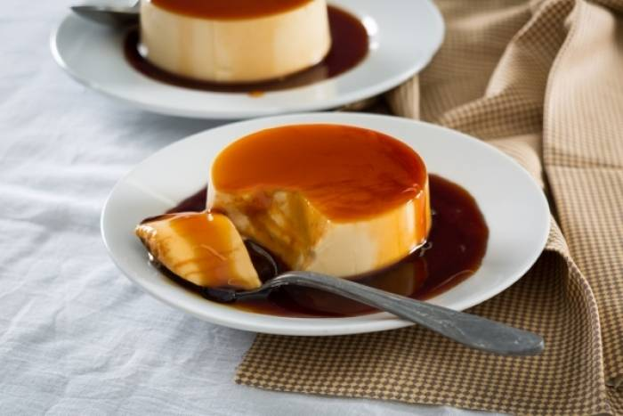
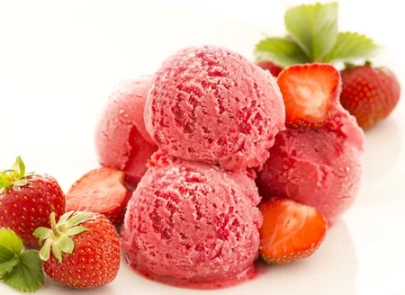
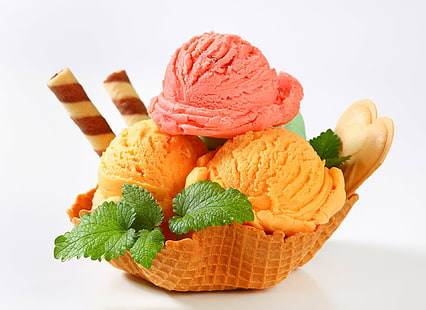
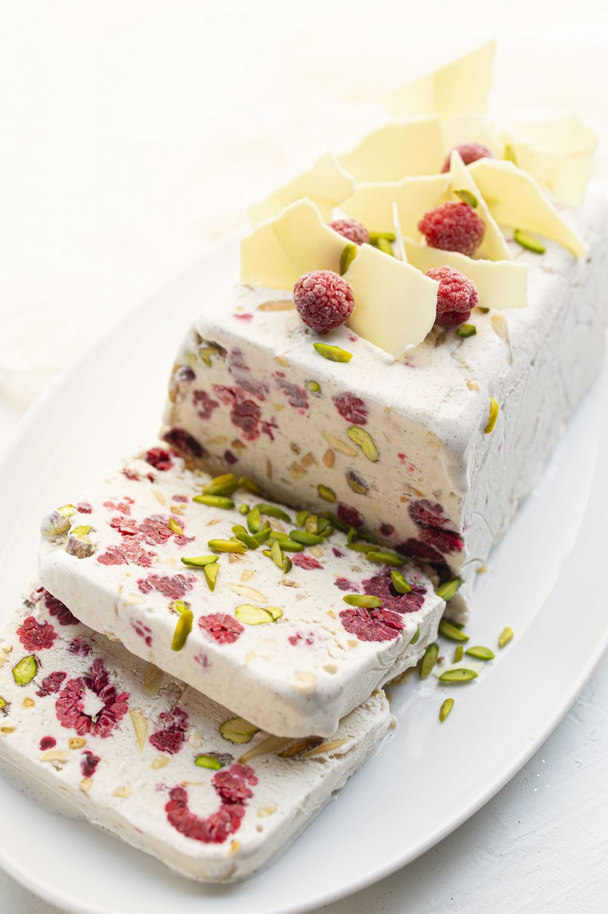
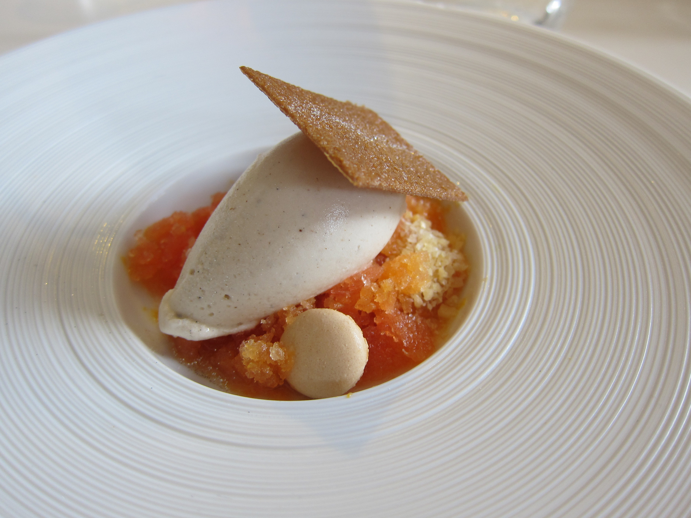
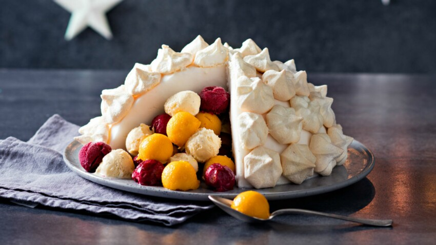
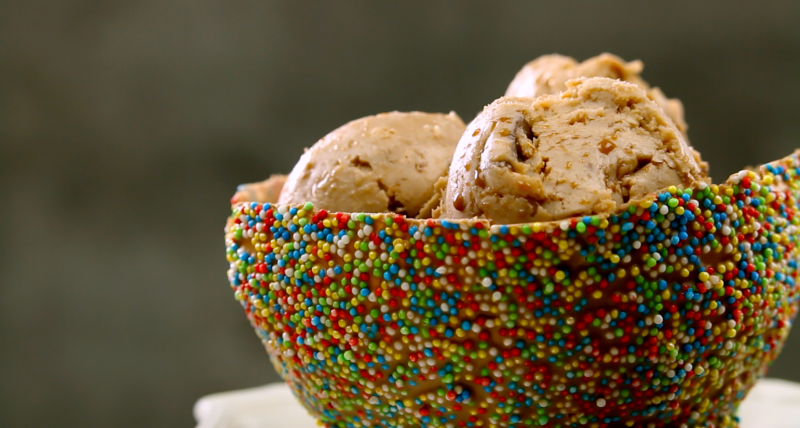
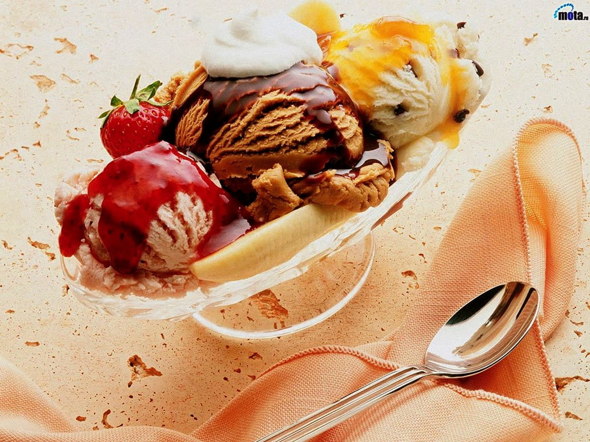
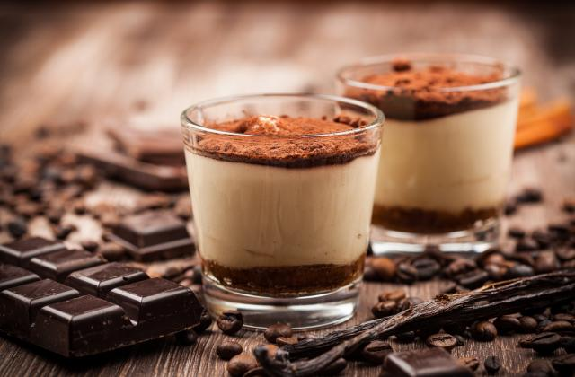

Un classique de la pâtisserie : une crème prise cuite avec un caramel liquide.

Dessert Glace
Crème Glacée Fraise

Bouchées sucrées
Plus besoin de commander une entrée ou un plat principal que vous toucherez à peine, pour ensuite vous jeter sur le dessert tant attendu : ce restaurant-ci ne sert (presque) que des mets sucrés.

Buche
Dessert glacé aux framboises.

Desserts glacés
Pour un instant fraîcheur, pensez à nos recettes de desserts glacés.

Dessert glacé en forme d’igloo
.

Desserts délicieux à base de glace
Depuis 20 ans, BienManger.com recherche dans chaque région et dans chaque

Dessert glacé
www.marmiton.org › recettes › rechercheTiramisu : nos délicieuses recettes de tiramisu Tiramisu. 457 recettes. Filtrer. 0. Tiramisu (recette originale) 4.8/5 (1614 avis) Tiramisu aux speculoos. 4.8/5 (623 avis) Tiramisu aux framboises. 4.8/5 (373 avis ...

Tiramisu au café corsé
Copeau de copeaux de chocola
